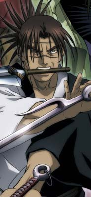

|
| Blade - A Lâmina do Imortal ganha anime
Quando o mangá Blade - A Lâmina do Imortal (Mugen no Juunin) começou a ser publicado em 2003 no Brasil, muitos leitores se questionaram a série não contava com uma adaptação em animê. Publicado desde 1994 na revista Afternoon, Blade é um título conhecido no Japão, mas muitos fãs realçavam o fato do quadrinho possuir um traço extremamente pesado e bem acabado, que perderia seu expressionismo caso ganhasse série animada. Mas para a alegria de alguns, e tristeza de outros (se é que um novo animê pode receber esta classificarão), a versão animada da série foi confirmada para começar a ser exibida ainda em abril. O animê é uma produção do estúdio Bee Train (responsável, entre outros, pela série de animês .Hack//) com direção de Koichi Mashimo, que já havia trabalhado no estúdio no animê Popolocrois. A série é baseada no mangá de Hiroaki Samura, que conta a história de Manji, um ronin que ganhou a capacidade de ser imortal. Passado em um Japão Feudal, a trama começa quando Rin, a herdeira de um famoso dojo pede ajuda ao samurai imortal para se vingar do assassino de seu pai. O site oficial do animê já se encontra no ar. Nele é possível conferir a primeira imagem do desenho, e ainda perceber como o design dos personagens se encontra próximo ao original. Para conferir, acesse http://mugen.kc.kodansha.co.jp/

|
| Retornar para Página Inicial |